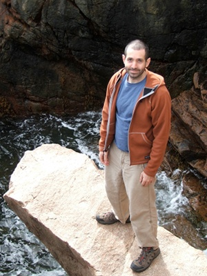

|  |
contactmailing address
Searles Science Building
e.morehouse@bowdoin.edu |
I am currently a visiting instructor at the Department of Computer Science at Bowdoin College.
Between 2020 and 2023 I was a postdoc with Pawel Sobocinski in the Compositional Systems and Methods Group of the Department of Software Science at TalTech University.
Between 2016 and 2019 I was a postdoc in the Department of Mathematics and Computer Science at Wesleyan University, where I taught and studied categorical semantics of formal systems.
Between 2013 and 2016 I was a postdoc with Bob Harper in the Principles of Programming Group of the Computer Science Department at Carnegie Mellon University, where I worked on computational aspects of Homotopy Type Theory.
I am interested in what category theory, type theory and proof theory
can learn from one another.
I believe that categorical semantics can be quite helpful in clarifying
the algebraic principles governing the properties of formal systems,
which can lead us to useful insights into program development and proof search.
In fall 2023 I taught Bowdoin's CSCI 2210: Theory of Computation.
Between 2020 and 2023 I taught TalTech's ITI0212: Functional Programming.
Between fall 2016 and spring 2018 I taught Wesleyan's COMP 112: Introduction to Programming.
In spring 2018 I taught MATH 402: Category Theory, and in spring 2017 I taught COMP 360: Quantum Information Systems.
In the summers of 2015 and 2016 I taught introduction to category theory at the Oregon Programming Languages Summer School.
I have written a keyboard layout for Macintosh with the mathematical symbols that I use most often. This gets changed around and expanded pretty frequently, but you're free to use it and adapt it to your own needs. Suggestions are also welcome.